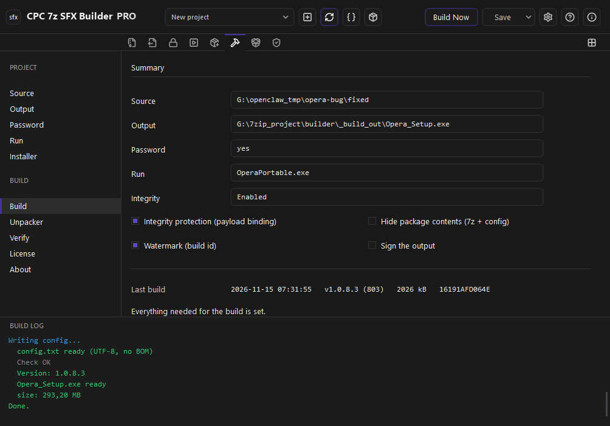
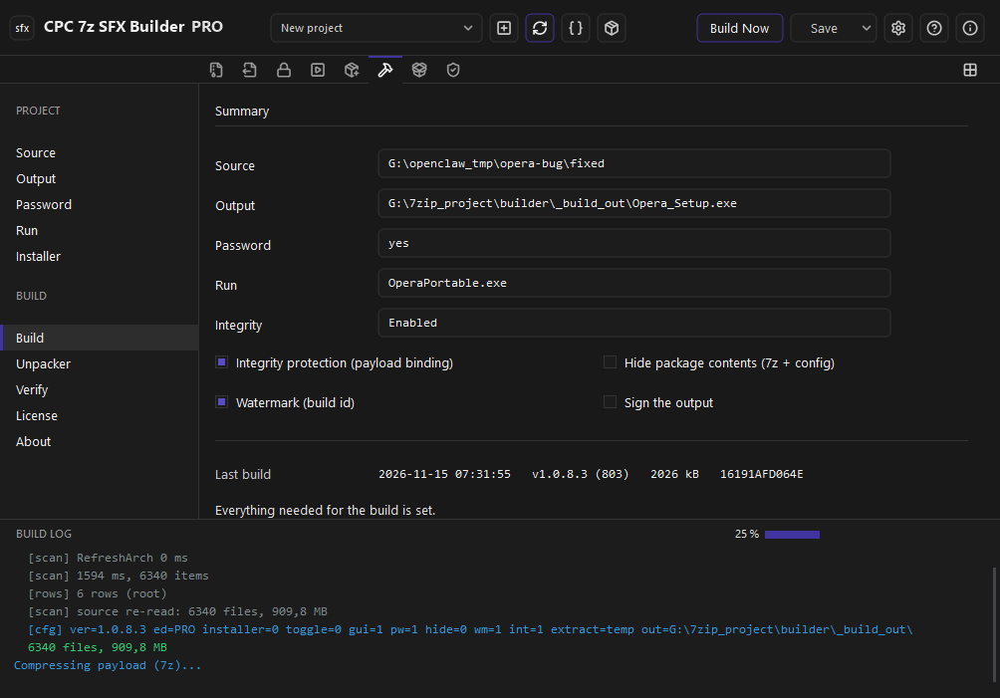
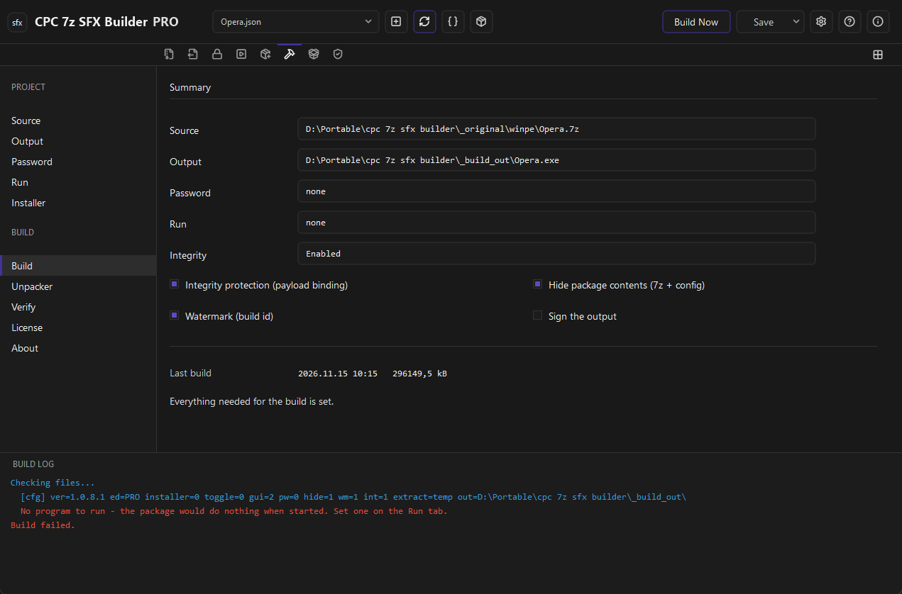

Build
The Build tab consolidates all active configurations. It provides a final validation summary before the build and flags any unconfigured or missing parameters.

Pre-Build Summary
The summary panel validates the following core parameters:
| Line | Description |
|---|---|
| Source | The directory or archive queued for packaging. |
| Output | The destination path and file name of the generated executable. |
| Password | yes if payload encryption is enabled, none if not. |
| Run | The executable launched after extraction. |
| Integrity | Whether the payload carries its SHA256 seal. |
| Last build | The date and size of the most recent output. If no build has been made yet and no output file exists in the output folder, the row reads no build yet. |
The status line reports whether the two mandatory inputs are present: Everything needed for the build is set. when both the source and the product name are given, and No source selected. otherwise. The line is informational; the full validation runs when the build starts.
Three further options on this tab control what the package itself contains:
- Hide package (7z + config): the payload and the configuration are hidden from archive tools. Pro edition only; in the Free edition the build stops with
Hide package: this feature requires a PRO licence. - Watermark (build id): an identifier is embedded in the package, so a leaked build can be traced back.
- Sign the output: the finished package is signed with a code-signing certificate from the Windows certificate store, including a timestamp. The certificate is not bundled; it is selected in the Settings window, where the list can be refreshed with the Refresh button.
Build Process
- Verify the configuration summary. Correct any unintended parameters on their respective tabs.
- Select Build Now (or press F5).
- Monitor the Build Log panel for step-by-step build diagnostics.
- When the final entry contains the name of the .exe file, the package is available in the output directory.
Build time grows with the payload size, and rises steeply with the compression level.

If a validation stops the build, the log states the reason in a red line:

Package Integrity Validation
Cryptographic payload sealing is enforced through the Ed25519 signature of the configuration and the SHA256 hash of the payload.
- Enabled: the builder records the SHA256 hash and offset of the payload in the configuration, signed with Ed25519. Any unauthorized post-build modification of the payload triggers a fatal validation error during execution and blocks extraction.
- Disabled: the package is not self-validated. This configuration is appropriate only when the package is modified after the build, or when it is signed with a code-signing certificate and false positives must be avoided.
In the free edition the option is permanently enabled and cannot be modified. The Verify a package tab displays the integrity state of a built package.
Build Log Analysis
| Color | Meaning |
|---|---|
| White | Standard build step, for example payload compression. |
| Green | The step completed successfully. |
| Yellow | Warning. Build continues. |
| Red | Build aborted. The preceding entry identifies the cause. |
Common fatal build errors (red indicators):
- ERROR: packer\7z.exe not found: the 7z binaries are missing from the
packerfolder of the application. - ERROR: stub\7z.sfx not found / ERROR: installer stub (stub\7z-admin.sfx) not found - reinstall the builder: the package stub is missing.
- No signing keypair (keys\builder.key) - restart the app or activate the licence: the builder cannot sign the configuration.
- Cannot create the output folder: the output path is not writable.
- Installer mode: set the program to run (this becomes the shortcut and icon target): installer mode requires a program to launch.
- The source archive is encrypted; the build needs its password: provide the archive password on the Source tab.
- The source is a single file above the 2 GB package limit - the package will probably not be runnable. The build stops before the payload is assembled; the limit is a product decision, not a technical one.
The Build Log is written in the selected interface language; the technical lines ([scan], [bld], [cfg]) are the same in every language.
Post-Build Verification
The generated executable is completely standalone and requires no external dependencies, including 7-Zip.
Deployment verification: it is strongly recommended to execute the generated package in a clean, isolated environment (sandbox or virtual machine) to validate extraction integrity and runtime behavior.